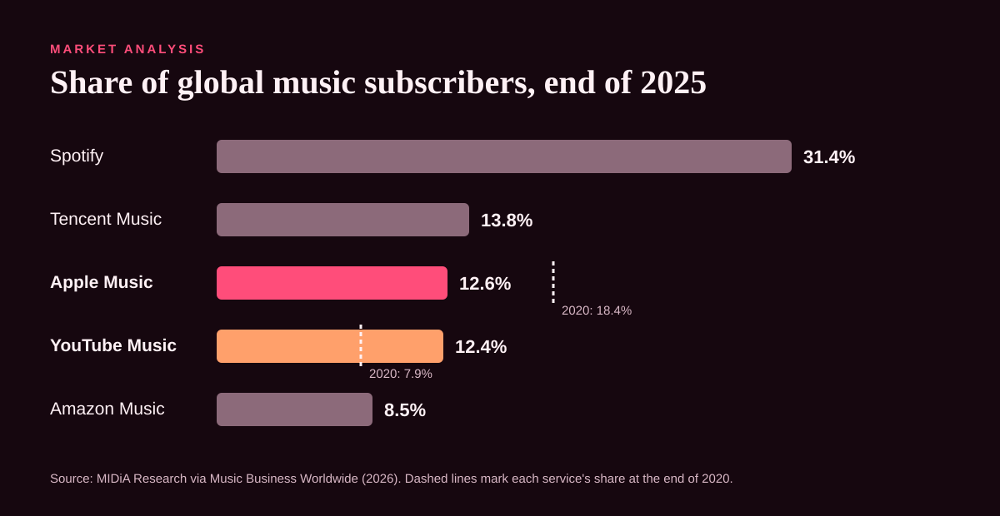
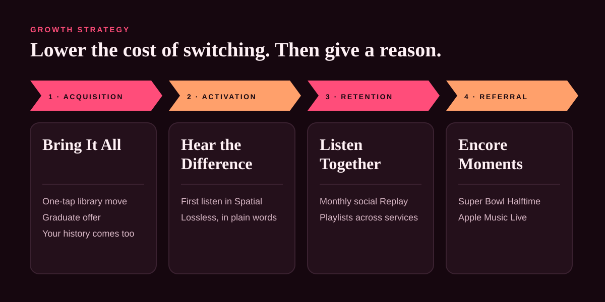
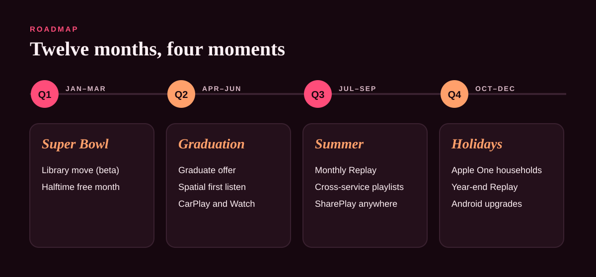

Apple Music · Growth strategy
Second Listen
Spotify’s lead isn’t built on a better product. It’s built on what people would lose by leaving. This strategy lowers the cost of switching to zero, then gives iPhone listeners a reason to switch.
- Target: iPhone Spotify loyalists
- 4 growth levers
- 12-month roadmap
01 · Market analysis
The market grew. Apple Music’s share didn’t.
Apple Music fell from 18.4% of global music subscribers at the end of 2020 to 12.6% at the end of 2025, and YouTube Music is now close behind.

02 · Target segments
Start with people who already carry an iPhone.
They have Apple Music installed, AirPods in, and a card on file. They stay on Spotify for their library and their friends: a switching-cost problem, not a product problem.
1
iPhone Spotify loyalists
“All my music is on Spotify.” The primary target.
2
Graduating students
Deciding for one month, when Spotify’s student discount ends.
3
Shared households
The person who pays for iCloud often pays for music too.
4
Android listeners
The long-term bet: a product investment, not a campaign.
03 · Growth strategy
Lower the cost of switching. Then give a reason.
Each lever removes one thing people would lose by leaving Spotify, and pairs it with something only Apple can offer.

Bring It All
A one-tap library move, with your history seeding recommendations from day one.
Hear the Difference
One personalised track in Spatial Audio in the first five minutes. Don’t describe it; play it.
Listen Together
Monthly Replay stories and shared playlists that play for friends who aren’t subscribers yet.
Encore Moments
The Super Bowl Halftime Show and Apple Music Live as acquisition events.
04 · Roadmap and KPIs
Twelve months, four moments.
Each quarter ships around a moment when people are already rethinking what they listen on.

| Lever | KPI | Target |
|---|---|---|
| Headline | Global subscriber share | Hold 12.6% in year 1 |
| Bring It All | New trials that start with a library import | 30% |
| Hear the Difference | AirPods trial users playing Spatial Audio in week 1 | 60% |
| Listen Together | Subscribers sharing or collaborating monthly | 25% |
| Encore Moments | Trial starts in Super Bowl week vs. a normal week | 3× |
The full strategy
Read the documents
Sources, segments, levers, roadmap, guardrails and risks are on GitHub.